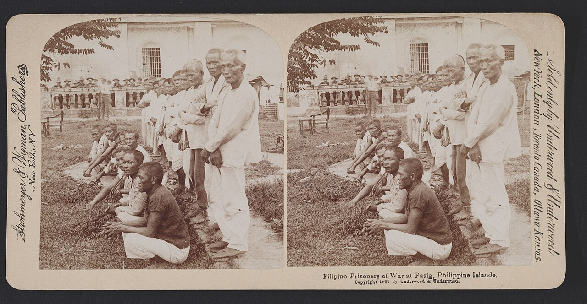

Directions: Your teacher assigns your role. Study your station's document, answer its questions, and build your argument in Part 2. In Part 3 the class debates and votes the question the Senate faced in February 1899. Argue from your document, in your role, even where your own view differs. Station 5 contains a soldier's description of a killing order, in his own words, and a report of deaths that he did not count himself; the teacher key explains both.
Source: Albert J. Beveridge, The March of the Flag, speech of September 1898, as banked in the Primary Source Project (Indianapolis pamphlet of 1898; Teaching American History text). Beveridge of Indiana entered the Senate in 1899 and spoke for ratification.
"Hawaii is ours; Puerto Rico is to be ours; at the prayer of the people Cuba will finally be ours; in the islands of the east, even to the gates of Asia, coaling stations are to be ours; at the very least the flag of a liberal government is to float over the Philippines, and it will be the stars and stripes of glory."
"The opposition tells us that we ought not to govern a people without their consent. I answer, the rule of liberty that all just government derives its authority from the consent of the governed, applies only to those who are capable of self-government. We govern the Indians without their consent, we govern our territories without their consent, we govern our children without their consent."
1. Beveridge answers the consent argument by narrowing it. State his answer in one sentence, then name the assumption about Filipinos that the answer depends on.
2. List the three kinds of gain Beveridge promises from the islands in the first passage: one about trade, one about position in Asia, and one about the flag itself. Which of the three would you lead with in the Senate, and why?
Source: Your part is a composite of the senators who spoke against ratification. Their shared argument is quoted here in the words of the American Anti-Imperialist League Platform of 1899, as banked in the Primary Source Project (Encyclopedia.com text), including the sentence from Abraham Lincoln that the platform quoted.
"We maintain that governments derive their just powers from the consent of the governed. We insist that the subjugation of any people is "criminal aggression" and open disloyalty to the distinctive principles of our Government."
The platform closed by holding, with Abraham Lincoln, that "no man is good enough to govern another man without that man's consent."
1. The expansionists say the Filipinos are not capable of self-government, so the consent rule does not apply. Using only the two quotations above, write the reply your senator gives.
2. Your side lost the vote 57 to 27, and ratification needed only 56. What does that arithmetic tell you about how close your argument came, and about which senators your side needed to move?
Source: Emilio Aguinaldo, proclamation of January 5, 1899, protesting General Otis's proclamation of American military government. English translation as reproduced on Wikisource, Emilio Aguinaldo's Second Proclamation of January 5, 1899. Ellipses mark cuts, which are listed in the teacher key.
On General Otis calling himself military governor: "I protest one and a thousand times, with all my energy in my soul, against such an authority."
"I solemnly proclaim that I have never had, either at Singapore or at Hongkong or here in the Philippines, any verbal or written contract for the recognition of American sovereignty over this cherished soil."
"... I returned to these islands, conveyed by an American man of war, on the 19th of May of last year, with the firm and clear purpose of fighting the Spaniards in order to reconquer our liberty and independence ..."
1. Aguinaldo's case rests on a claim about what he agreed to and what he did not. State the claim, and name the fact from the lesson that supports it: what had Filipino forces and the Malolos congress built by January 1899?
2. The Senate debated the treaty without hearing any Filipino. In one sentence, in role, tell the Senate what its vote looks like from Malolos.
Source: American Anti-Imperialist League Platform, adopted at the League's national convention in Chicago, October 1899, as banked in the Primary Source Project (Encyclopedia.com text). Disclosure on timing: the platform was adopted eight months after the Senate vote. Organizers used the same arguments in the debate before the vote, and the platform carried them into the fight against the war and the election of 1900.
"We hold that the policy known as imperialism is hostile to liberty and tends toward militarism, an evil from which it has been our glory to be free."
"We earnestly condemn the policy of the present National Administration in the Philippines. ... We denounce the slaughter of the Filipinos as a needless horror."
"We demand the immediate cessation of the war against liberty, begun by Spain and continued by us."
1. The platform warns about two different harms, one in the Philippines and one at home in the United States. Name both, in the platform's own words where you can.
2. Your coalition includes a former president, an industrialist, and a labor leader. Write the one sentence from the platform that all three could sign, and explain why it works for each of them.
Source: Letter of A. A. Barnes, an American soldier serving in the Philippines, published in the Standard of Greensburg, Indiana, in May 1899 and reprinted in Soldiers' Letters, the pamphlet of soldiers' letters home issued by the Anti-Imperialist League at Boston in 1899. The letter is quoted in full below; nothing has been cut from the passage.

"The town of Titatia was surrendered to us a few days ago, and two companies occupy the same. Last night one of our boys was found shot and his stomach cut open. Immediately orders were received from General Wheaton to burn the town and kill every native in sight; which was done to a finish. About 1,000 men, women and children were reported killed. I am probably growing hard-hearted, for I am in my glory when I can sight my gun on some dark skin and pull the trigger."
1. Barnes reports a number killed. His own sentence marks that number as a report rather than a count. Find the word that does that work, and explain why a careful reader keeps the distinction.
2. Expansionists in 1899 answered letters like this one by calling them boasting meant to impress readers at home, or fabrications. State the strongest version of that answer, then state what other evidence from the lesson a reader can set beside this letter.
1. The strongest sentence in your document, copied exactly, and the line you will say first in the debate:
2. The fact your role cannot escape: the strongest point against your position, stated fairly, and your answer to it in role:
3. One question your role puts to another role in the debate. Name the role, and write the question:
The question before the class is the question before the Senate in February 1899: shall the Senate advise and consent to the Treaty of Paris, including the cession of the Philippines to the United States? Ratification requires two thirds of the votes cast.
My vote (circle one): Ratify Reject
Class tally: Ratify ______ Reject ______ The Senate, February 6, 1899: Ratify 57, Reject 27.
Defend your vote in a short paragraph. You may vote in role or out of role, but say which you are doing. Use one quotation from any station document and one fact from the lesson, and answer the strongest argument on the other side.
1. Beveridge answers the consent argument by narrowing it. State his answer in one sentence, then name the assumption about Filipinos that the answer depends on. His answer: the consent rule applies only to peoples capable of self-government, and he classes Filipinos with Indians, territorial residents, and children, all governed without consent. The assumption is that Filipinos in 1899 were not capable of self-government. The lesson evidence tests that assumption directly: by January 1899 the Filipinos had proclaimed independence, written a constitution at Malolos, and inaugurated a republic.
2. List the three kinds of gain Beveridge promises from the islands in the first passage: one about trade, one about position in Asia, and one about the flag itself. Which of the three would you lead with in the Senate, and why? Trade: coaling stations and the route toward Asia's markets, developed in the full speech as new markets for farmers, factories, and merchants. Position: stations in the islands of the east, even to the gates of Asia. The flag: a liberal government's flag over the Philippines as a matter of national destiny, the stars and stripes of glory. Any lead choice earns credit if the reason given fits a Senate audience in 1899 rather than a modern one.
1. The expansionists say the Filipinos are not capable of self-government, so the consent rule does not apply. Using only the two quotations above, write the reply your senator gives. Accept replies built from the documents: just powers derive from consent of the governed, with no exception written into the principle; subjugation of any people is criminal aggression; and in Lincoln's sentence the platform quoted, no man is good enough to govern another without that man's consent. The strongest replies note that the capability exception is the expansionists' addition, not part of the principle as stated.
2. Your side lost the vote 57 to 27, and ratification needed only 56. What does that arithmetic tell you about how close your argument came, and about which senators your side needed to move? Of 84 votes cast, two thirds is 56. The treaty cleared the bar by one vote, so two senators switching from ratify to reject defeats it, and one switching makes the margin exact. The side needed to move the undecided and the administration's marginal supporters, not the committed expansionists, which is why the debate ran to the last day and why the outbreak of fighting on February 4 was used by both sides in the final two days.
1. Aguinaldo's case rests on a claim about what he agreed to and what he did not. State the claim, and name the fact from the lesson that supports it: what had Filipino forces and the Malolos congress built by January 1899? The claim: he never made any verbal or written contract recognizing American sovereignty, and he returned on an American warship to fight Spain for Philippine liberty and independence. Supporting facts: Filipino forces controlled most of Luzon outside Manila; independence was proclaimed on June 12, 1898; the Malolos congress wrote a constitution; and the Philippine Republic was inaugurated on January 23, 1899. Cuts in this station's quotations: the third quotation is one sentence of the proclamation with its opening words and closing clause cut, marked by the ellipses at both ends. The first two quotations are complete sentences.
2. The Senate debated the treaty without hearing any Filipino. In one sentence, in role, tell the Senate what its vote looks like from Malolos. Accept any in-role sentence that states the structural fact: a senate in Washington deciding, with the former colonial power, the fate of a republic that had already proclaimed itself and received no hearing. Credit sentences that use the document's own claims, consent and the absence of any contract, over general appeals.
1. The platform warns about two different harms, one in the Philippines and one at home in the United States. Name both, in the platform's own words where you can. In the Philippines: the slaughter of the Filipinos, condemned as a needless horror, in a war against liberty begun by Spain and continued by the United States. At home: imperialism is hostile to liberty and tends toward militarism, an evil the platform says the country had been free of, so empire abroad changes the republic at home. The cut in the second quotation is marked by its ellipsis; the omitted words repeat the condemnation of the administration's policy.
2. Your coalition includes a former president, an industrialist, and a labor leader. Write the one sentence from the platform that all three could sign, and explain why it works for each of them. Strongest answer: the consent sentence from Station 2, governments derive their just powers from the consent of the governed. It works for Cleveland as constitutional principle, for Carnegie as the Declaration's own ground (he offered 20 million dollars for Philippine independence), and for Gompers as the standing of working people against rule imposed without their voice, although the lesson notes that other League members opposed annexation on labor competition or racial grounds the principled sentence does not cover.
1. Barnes reports a number killed. His own sentence marks that number as a report rather than a count. Find the word that does that work, and explain why a careful reader keeps the distinction. The word is reported: about 1,000 men, women and children were reported killed. Barnes relays a figure; he does not claim to have counted. The distinction is the lesson's standing rule for casualty figures: treat the 1,000 as one soldier's report of an order carried out, not as a verified toll for the town. The order itself, to burn the town and kill every native in sight, is stated in his own voice as something he took part in.
2. Expansionists in 1899 answered letters like this one by calling them boasting meant to impress readers at home, or fabrications. State the strongest version of that answer, then state what other evidence from the lesson a reader can set beside this letter. Strongest version: the League selected and published the most shocking letters to build its case, some writers' identities were withheld, and soldiers exaggerate for an audience at home, so a single letter cannot carry the weight of a general claim about the war. Corroboration from the lesson: the documented methods of the war as it lengthened, village burning, reconcentration in Batangas, and the water cure, and General Smith's kill and burn order on Samar, for which he was court-martialed. The pattern is documented beyond any one letter.
Full credit should be awarded if the student:
Teacher disclosures carried in this activity. The anti-imperialist senator is a composite part; the station says so on its face, and no words are put in a named senator's mouth. The League platform station discloses that the platform postdates the February vote. The Aguinaldo portrait was published in 1899 and is dated about 1898 on its file page; the caption says so. The prisoners photograph is a stereograph view held by the Library of Congress, dated 1899.
Blueprint 3.